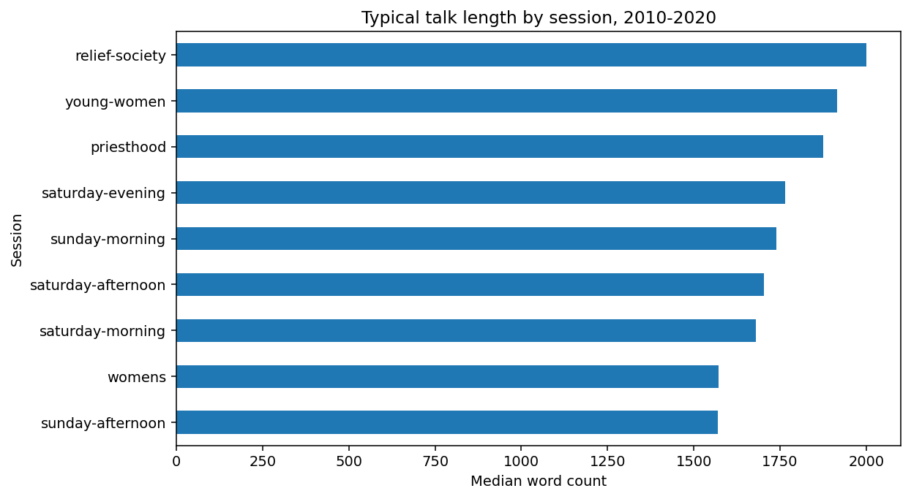
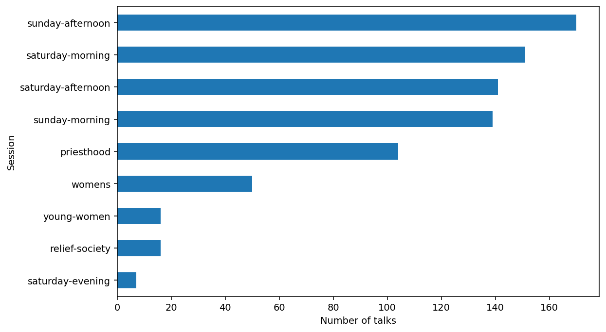
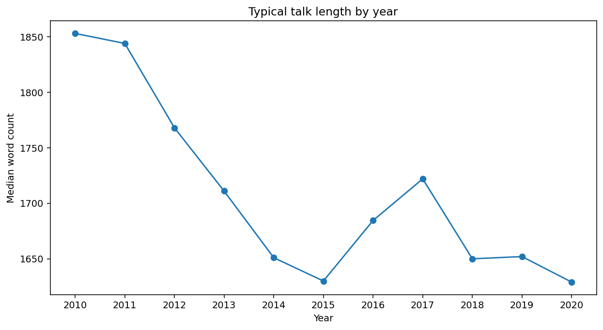
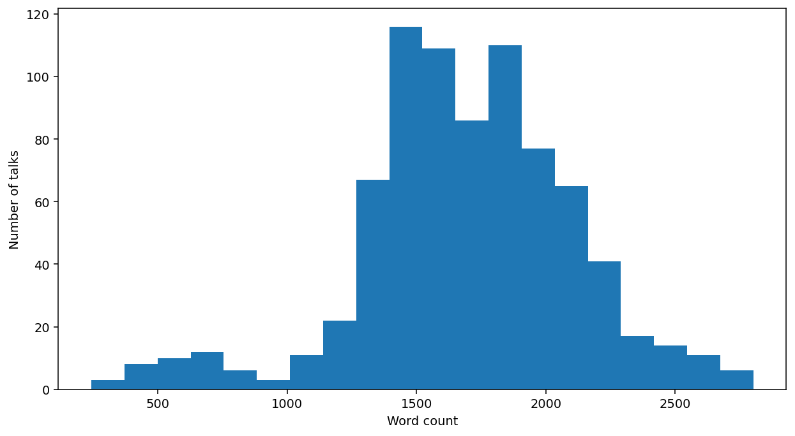
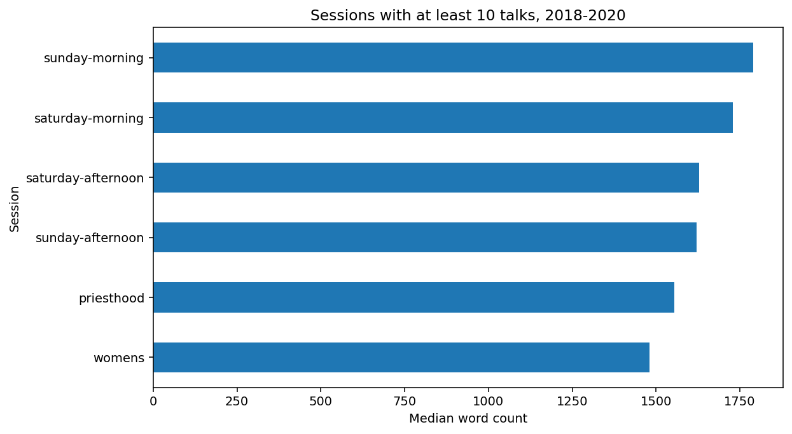

Answering questions with pandas: Completed activity
Purpose and setup
Read and write pandas pipelines, summarize groups, attach group references to talks, and make plots. Equivalent code can be correct when it answers the same question. Every claim below describes the supplied dataset.
Run this file from its own directory in Positron. The relative path reflects the file’s location inside activity/.
import pandas as pd
import matplotlib.pyplot as plt
talks = pd.read_csv("../data/talks.csv")
talks.shape79414One row represents one talk. The initial shape is (794, 14).
Checkpoint 0: Review familiar pipelines
Decode the code
Before running, describe the question this code answers. Predict its type and shape, and explain why sorting precedes head(3).
decoded = (
talks.loc[
(talks["year"] == 2020)
& (talks["session"] == "sunday-morning"),
["talk_name", "speaker", "num_words"]
]
.sort_values("num_words", ascending=False)
.head(3)
)
decoded| talk_name | speaker | num_words | |
|---|---|---|---|
| 727 | Hear Him | Russell M. Nelson | 2591 |
| 497 | “Let This House Be Built unto My Name” | David A. Bednar | 1912 |
| 739 | Let God Prevail | Russell M. Nelson | 1858 |
The result is a three-row, three-column DataFrame containing the three Sunday morning talks from 2020 with the largest word counts. Taking head(3) before sorting would restrict the candidates before finding the largest counts.
Construct the code
Find the three Saturday morning talks from 2019 or 2020 with the largest word counts. Show the title, speaker, year, and word count.
review_mask = (
talks["year"].between(2019, 2020)
& (talks["session"] == "saturday-morning")
)
review_answer = (
talks.loc[review_mask, ["talk_name", "speaker", "year", "num_words"]]
.sort_values("num_words", ascending=False)
.head(3)
)
review_answer| talk_name | speaker | year | num_words | |
|---|---|---|---|---|
| 717 | A Home Where the Spirit of the Lord Dwells | Henry B. Eyring | 2019 | 2247 |
| 694 | Shall We Not Go On in So Great a Cause? | M. Russell Ballard | 2020 | 2234 |
| 19 | Answers to Prayer | Brook P. Hales | 2019 | 2141 |
review_checks = {
"three_rows": len(review_answer) == 3,
"allowed_years": review_answer["year"].isin([2019, 2020]).all(),
"correct_session": talks.loc[review_answer.index, "session"].eq(
"saturday-morning"
).all(),
"decreasing_word_count": review_answer["num_words"].is_monotonic_decreasing,
}
review_checks{'three_rows': True, 'allowed_years': np.True_, 'correct_session': np.True_, 'decreasing_word_count': True}Checkpoint 1: Predict aggregation and transformation
The following talks are invented to make the calculations visible.
toy = pd.DataFrame({
"talk": list("ABCDEF"),
"session": ["morning"] * 3 + ["afternoon"] * 3,
"num_words": [1000, 2000, 3000, 1000, 1200, 1400],
})
toy| talk | session | num_words | |
|---|---|---|---|
| 0 | A | morning | 1000 |
| 1 | B | morning | 2000 |
| 2 | C | morning | 3000 |
| 3 | D | afternoon | 1000 |
| 4 | E | afternoon | 1200 |
| 5 | F | afternoon | 1400 |
Predict how many rows remain after calculating session medians.
toy_summary = toy.groupby("session", as_index=False).agg(
median_words=("num_words", "median")
)
toy_summary| session | median_words | |
|---|---|---|
| 0 | afternoon | 1200.0 |
| 1 | morning | 2000.0 |
Two rows represent two sessions. The original talk identities are absent.
Inspect the GroupBy object
grouped = toy.groupby("session")
print(type(grouped).__name__, grouped.ngroups)
grouped.indicesDataFrameGroupBy 2{'afternoon': array([3, 4, 5]), 'morning': array([0, 1, 2])}The mapping associates each group key with row positions: afternoon uses 3, 4, and 5, while morning uses 0, 1, and 2. Creating a GroupBy specifies the grouping. Inspection and calculations request the grouping work when they need it.
grouped.get_group("morning")| talk | session | num_words | |
|---|---|---|---|
| 0 | A | morning | 1000 |
| 1 | B | morning | 2000 |
| 2 | C | morning | 3000 |
grouped.obj is toy, len(toy)True6The GroupBy keeps the source object. Extracting a group leaves the original six-row table intact. Selecting a column and requesting a reduction determines what to calculate for each group.
Predict the values that should appear beside each original talk.
toy["session_median_words"] = (
toy.groupby("session")["num_words"].transform("median")
)
toy| talk | session | num_words | session_median_words | |
|---|---|---|---|---|
| 0 | A | morning | 1000 | 2000.0 |
| 1 | B | morning | 2000 | 2000.0 |
| 2 | C | morning | 3000 | 2000.0 |
| 3 | D | afternoon | 1000 | 1200.0 |
| 4 | E | afternoon | 1200 | 1200.0 |
| 5 | F | afternoon | 1400 | 1200.0 |
Six rows still represent six talks. Morning talks receive 2,000 and afternoon talks receive 1,200 as their reference values.
Filtering order
Compare filtering talk rows before calculating medians with filtering the summary after calculating medians.
long_toy = toy.loc[toy["num_words"] >= 1500]
filter_first = long_toy.groupby("session", as_index=False).agg(
median_words=("num_words", "median")
)
summarize_first = toy_summary.loc[toy_summary["median_words"] >= 1500]
print("Filter talk rows first:")
print(filter_first.to_string(index=False))
print("\nSummarize first:")
print(summarize_first.to_string(index=False))Filter talk rows first:
session median_words
morning 2500.0
Summarize first:
session median_words
morning 2000.0The first analysis reports a morning median of 2,500 based on B and C. The second reports a morning median of 2,000 based on A, B, and C. The pipelines use different observations to calculate the statistic.
Checkpoint 2: Counts, proportions, and recorded values
session_counts = talks["session"].value_counts()
session_counts| count | |
|---|---|
| session | |
| sunday-afternoon | 170 |
| saturday-morning | 151 |
| saturday-afternoon | 141 |
| sunday-morning | 139 |
| priesthood | 104 |
| womens | 50 |
| relief-society | 16 |
| young-women | 16 |
| saturday-evening | 7 |
session_proportions = talks["session"].value_counts(normalize=True)
session_proportions| proportion | |
|---|---|
| session | |
| sunday-afternoon | 0.214106 |
| saturday-morning | 0.190176 |
| saturday-afternoon | 0.177582 |
| sunday-morning | 0.175063 |
| priesthood | 0.130982 |
| womens | 0.062972 |
| relief-society | 0.020151 |
| young-women | 0.020151 |
| saturday-evening | 0.008816 |
Every session label is present, so these proportions use 794 talks as the denominator. They describe talks rather than unique speakers.
availability = talks.groupby("session", as_index=False).agg(
n_talks=("runtime", "size"),
n_recorded_runtimes=("runtime", "count"),
)
availability| session | n_talks | n_recorded_runtimes | |
|---|---|---|---|
| 0 | priesthood | 104 | 92 |
| 1 | relief-society | 16 | 14 |
| 2 | saturday-afternoon | 141 | 114 |
| 3 | saturday-evening | 7 | 6 |
| 4 | saturday-morning | 151 | 131 |
| 5 | sunday-afternoon | 170 | 139 |
| 6 | sunday-morning | 139 | 114 |
| 7 | womens | 50 | 41 |
| 8 | young-women | 16 | 12 |
There are 794 talk rows and 663 recorded runtimes. size counts observations, while count counts nonmissing values of a variable. Missingness repair belongs to a later lesson.
Checkpoint 3: Grouped summaries
session_summary = (
talks.groupby("session", as_index=False)
.agg(
n_talks=("num_words", "size"),
mean_words=("num_words", "mean"),
median_words=("num_words", "median"),
)
.sort_values("median_words", ascending=False)
)
session_summary.round(1)| session | n_talks | mean_words | median_words | |
|---|---|---|---|---|
| 1 | relief-society | 16 | 2035.2 | 2000.5 |
| 8 | young-women | 16 | 2020.6 | 1914.5 |
| 0 | priesthood | 104 | 1852.5 | 1876.0 |
| 3 | saturday-evening | 7 | 1568.4 | 1765.0 |
| 6 | sunday-morning | 139 | 1741.2 | 1739.0 |
| 2 | saturday-afternoon | 141 | 1689.7 | 1703.0 |
| 4 | saturday-morning | 151 | 1663.4 | 1680.0 |
| 7 | womens | 50 | 1658.6 | 1571.0 |
| 5 | sunday-afternoon | 170 | 1549.7 | 1569.5 |
Nine rows represent nine session categories. Group sizes help us interpret the summaries. A total word count would combine talk length and the number of talks.
year_session = (
talks.groupby(["year", "session"], as_index=False)
.agg(n_talks=("num_words", "size"),
median_words=("num_words", "median"))
)
year_session.head()| year | session | n_talks | median_words | |
|---|---|---|---|---|
| 0 | 2010 | priesthood | 12 | 2073.0 |
| 1 | 2010 | relief-society | 4 | 2030.5 |
| 2 | 2010 | saturday-afternoon | 13 | 1853.0 |
| 3 | 2010 | saturday-morning | 14 | 1483.0 |
| 4 | 2010 | sunday-afternoon | 16 | 1492.0 |
Each row represents an observed year-session combination. The table does not require every possible combination to occur.
Checkpoint 4: A group reference beside each talk
talks["session_median_words"] = (
talks.groupby("session")["num_words"].transform("median")
)
talks["above_session_median"] = (
talks["num_words"] > talks["session_median_words"]
)
talks[["talk_name", "session", "num_words", "session_median_words",
"above_session_median"]].head()| talk_name | session | num_words | session_median_words | above_session_median | |
|---|---|---|---|---|---|
| 0 | Finding Joy in Christ | saturday-afternoon | 1514 | 1703.0 | False |
| 1 | The Culture of Christ | saturday-afternoon | 1500 | 1703.0 | False |
| 2 | Let Patience Have Her Perfect Work, and Count It All Joy! | sunday-afternoon | 1492 | 1569.5 | False |
| 3 | Ask, Seek, and Knock | sunday-afternoon | 1484 | 1569.5 | False |
| 4 | Enduring Power | sunday-afternoon | 1430 | 1569.5 | False |
above_all_years = talks.loc[talks["above_session_median"]]
len(talks), len(above_all_years)794395The transformed column retains the original talk-row index. A strict greater-than comparison excludes ties, so the number above a median need not be exactly half of a group. This reference currently uses all years in the data.
Checkpoint 5: Dates and pandas plots
Date components and a yearly summary
talks["date"] = pd.to_datetime(
talks["date"], format="%Y-%m-%d %H:%M:%S.%f"
)
talks["talk_year"] = talks["date"].dt.year
annual = (
talks.groupby("talk_year", as_index=False)
.agg(n_talks=("num_words", "size"),
median_words=("num_words", "median"))
.sort_values("talk_year")
)
annual| talk_year | n_talks | median_words | |
|---|---|---|---|
| 0 | 2010 | 75 | 1853.0 |
| 1 | 2011 | 75 | 1844.0 |
| 2 | 2012 | 75 | 1768.0 |
| 3 | 2013 | 75 | 1711.0 |
| 4 | 2014 | 75 | 1651.0 |
| 5 | 2015 | 75 | 1630.0 |
| 6 | 2016 | 72 | 1684.5 |
| 7 | 2017 | 71 | 1722.0 |
| 8 | 2018 | 69 | 1650.0 |
| 9 | 2019 | 65 | 1652.0 |
| 10 | 2020 | 67 | 1629.0 |
Eleven rows represent eleven years of recorded talks.
A bar chart of session medians
ax = session_summary.sort_values("median_words").plot.barh(
x="session", y="median_words", legend=False, figsize=(9, 5)
)
ax.set_xlabel("Median word count")
ax.set_ylabel("Session")
ax.set_title("Typical talk length by session, 2010-2020")
plt.tight_layout()
plt.show()
A bar chart of counts
ax = session_counts.sort_values().plot.barh(figsize=(9, 5))
ax.set_xlabel("Number of talks")
ax.set_ylabel("Session")
plt.tight_layout()
plt.show()
A line chart over time
ax = annual.plot.line(
x="talk_year", y="median_words", marker="o", legend=False,
figsize=(9, 5)
)
ax.set_xlabel("Year")
ax.set_ylabel("Median word count")
ax.set_title("Typical talk length by year")
ax.set_xticks(annual["talk_year"])
plt.tight_layout()
plt.show()
A histogram of individual talk lengths
ax = talks["num_words"].plot.hist(bins=20, figsize=(9, 5))
ax.set_xlabel("Word count")
ax.set_ylabel("Number of talks")
plt.tight_layout()
plt.show()
A categorical bar represents a session. A line-chart point represents a year. A histogram bar counts talks whose word counts fall in a numeric interval.
Checkpoint 6: Final request
For recorded talks from 2018 through 2020:
- Compare median word counts across session categories and report counts.
- Retain categories with at least ten talks and order by median word count.
- Make a bar chart of that summary.
- Identify talks in the retained categories that exceed their own session’s median calculated from the 2018-2020 talks.
- Write one interpretation and one limitation.
Select the reference observations
recent = talks.loc[talks["year"].between(2018, 2020)].copy()
len(recent)201Summarize, filter groups, and order
recent_summary = recent.groupby("session", as_index=False).agg(
n_talks=("num_words", "size"),
median_words=("num_words", "median"),
)
eligible = (
recent_summary.loc[recent_summary["n_talks"] >= 10]
.sort_values("median_words", ascending=False)
)
eligible| session | n_talks | median_words | |
|---|---|---|---|
| 5 | sunday-morning | 37 | 1790.0 |
| 3 | saturday-morning | 41 | 1728.0 |
| 1 | saturday-afternoon | 39 | 1629.0 |
| 4 | sunday-afternoon | 46 | 1621.0 |
| 0 | priesthood | 13 | 1554.0 |
| 6 | womens | 18 | 1480.5 |
There are 201 recent talks, seven observed session categories, and six categories that meet the ten-talk condition. Seven Saturday evening talks fall outside the retained categories, leaving 194 talks in eligible categories.
Plot the group summary
ax = eligible.sort_values("median_words").plot.barh(
x="session", y="median_words", legend=False, figsize=(9, 5)
)
ax.set_xlabel("Median word count")
ax.set_ylabel("Session")
ax.set_title("Sessions with at least 10 talks, 2018-2020")
plt.tight_layout()
plt.show()
Attach references and identify qualifying talks
recent["session_median_words"] = (
recent.groupby("session")["num_words"].transform("median")
)
above_mask = (
recent["session"].isin(eligible["session"])
& (recent["num_words"] > recent["session_median_words"])
)
above_recent = recent.loc[
above_mask,
["talk_name", "speaker", "session", "year", "num_words",
"session_median_words"],
].sort_values(["session", "num_words"], ascending=[True, False])
len(above_recent), above_recent.head()95| talk_name | speaker | session | year | num_words | session_median_words | |
|---|---|---|---|---|---|---|
| 701 | Inspired Ministering | Henry B. Eyring | priesthood | 2018 | 2217 | 1554.0 |
| 377 | Your Priesthood Playbook | Gary E. Stevenson | priesthood | 2019 | 2202 | 1554.0 |
| 649 | The Powers of the Priesthood | Dallin H. Oaks | priesthood | 2018 | 1894 | 1554.0 |
| 386 | Behold! A Royal Army | Ronald A. Rasband | priesthood | 2018 | 1676 | 1554.0 |
| 477 | The Elders Quorum | D. Todd Christofferson | priesthood | 2018 | 1660 | 1554.0 |
Check the answer
checks = {
"201_recent_talks": len(recent) == 201,
"all_groups_accounted_for": recent_summary["n_talks"].sum() == len(recent),
"six_eligible_sessions": len(eligible) == 6,
"all_eligible_counts": eligible["n_talks"].ge(10).all(),
"194_talks_in_eligible_sessions": eligible["n_talks"].sum() == 194,
"95_above_median_talks": len(above_recent) == 95,
"allowed_years": above_recent["year"].between(2018, 2020).all(),
"eligible_sessions": above_recent["session"].isin(eligible["session"]).all(),
"strictly_above_reference": above_recent["num_words"].gt(
above_recent["session_median_words"]
).all(),
"dates_match_supplied_years": talks["talk_year"].eq(talks["year"]).all(),
}
checks{'201_recent_talks': True, 'all_groups_accounted_for': np.True_, 'six_eligible_sessions': True, 'all_eligible_counts': np.True_, '194_talks_in_eligible_sessions': np.True_, '95_above_median_talks': True, 'allowed_years': np.True_, 'eligible_sessions': np.True_, 'strictly_above_reference': np.True_, 'dates_match_supplied_years': np.True_}Interpretation and limitation
Among session categories with at least ten recorded talks from 2018 through 2020, Sunday morning has the largest median word count, at 1,790 words.
This descriptive comparison does not establish that the session causes longer talks. Categories contain different sets of speakers and conference contexts.
Reflection
- The year filter defines which observations contribute to the statistics.
- Aggregation changes the unit from talk to session category.
- The group-size filter selects summary rows.
- Transformation returns the group reference to each talk.
- The final mask selects individual talks using their reference and membership.
- The summary table supplies the inputs for the bar chart.